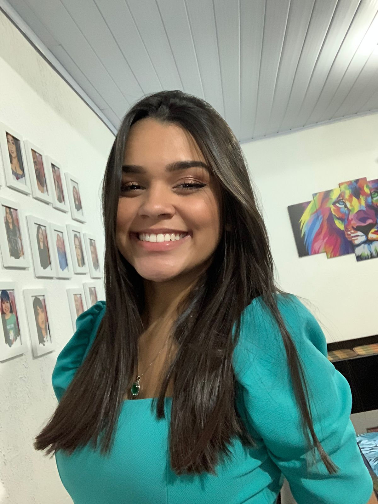
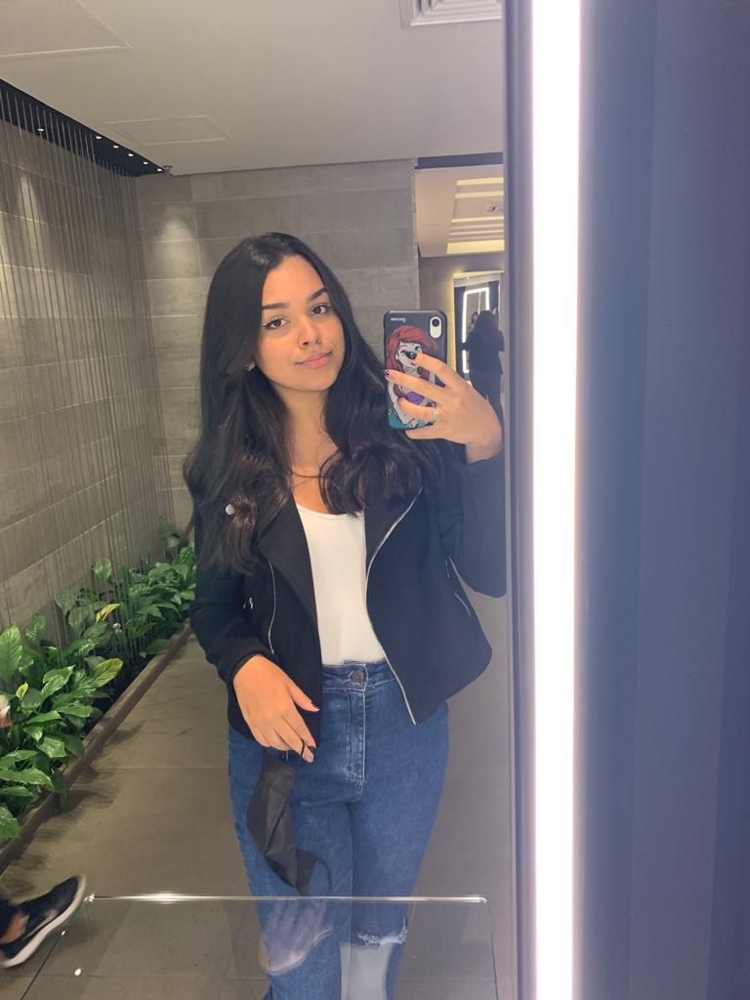
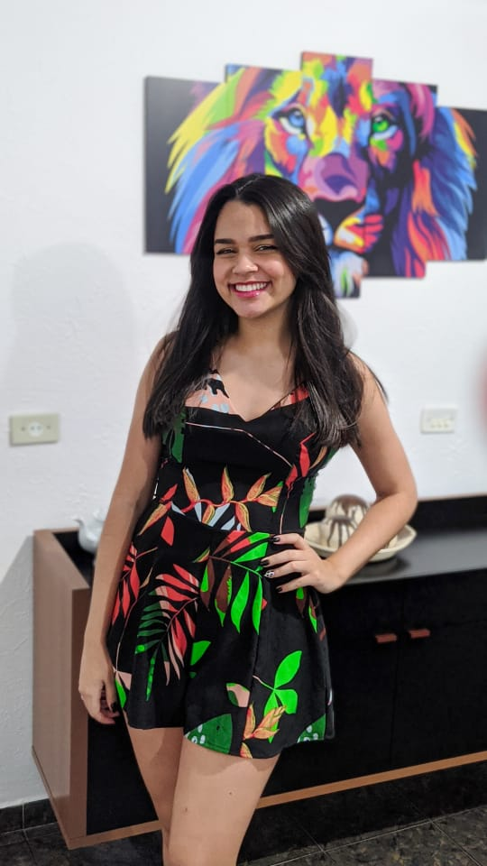
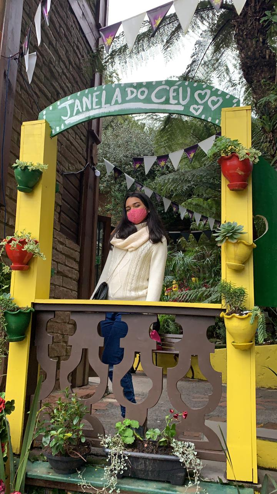

Eleanor Roosevelt - Muitas pessoas entrarão e sairão de sua vida, mas somente amigos verdadeiros deixarão pegadas em seu coração.
Juju faz 18!
Galeria de arte

Ao pesquisar seu nome no Google, me deparo com as seguintes qualidades: "(...)qualidades de quem assim se chama estão perseverança, bondade e determinação".

Amo seu jeitinho único de ser, que entre tanto seres presentes nesse planeta, consegue se sobressair e ser um destaque no meio de tantos.

Mais um ano se passa, mais uma unidade se soma a sua idade e mais bondosa, inteligente, batalhadora, amiga e dedicada você se torna. Isso não são características que qualquer possue, portanto preserve as suas.

"If you ever feel alone; Don't; You were never on your own; Never, never, never". Parafraseando minha banda favorita, eu digo: sempre estarei ao seu lado, conte sempre comigo e mais uma vez agradeço pela oportunidade de ser sua amiga e estar ao seu lado.
Por que a cor verde?
Sempre deixei claro que te via como uma borboleta sociável, ou seja, um serzinho capaz de se infriltrar em qualquer ambiente e conquistar todos ali. Entretanto, mais que uma borboleta, você é luz! você é verdadeira! você é aquele tipo de pessoa que todos desejam ter ao redor! Você faz bem e inspira. Tal como a natureza, tal como a cor verde que a representa, você é vida.